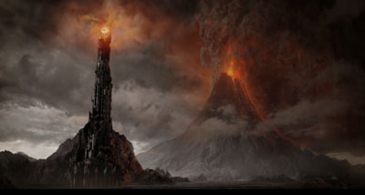
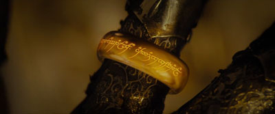
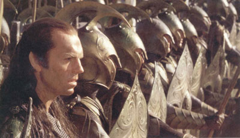
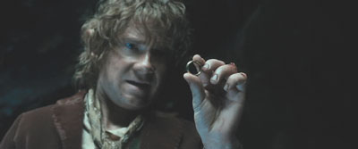
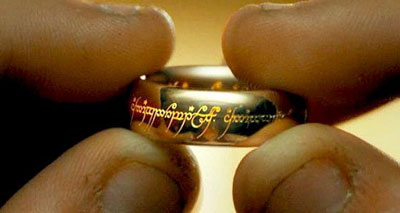
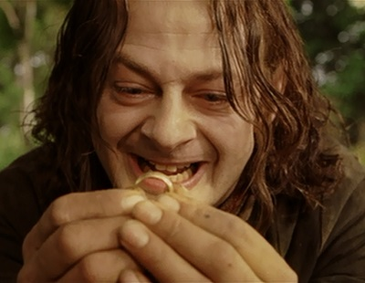

Origin
Mount Doom (right) of Mordor - where the One Ring was made
The greatest of all the Rings of Power and the most powerful artifact in all of Middle-Earth, the One Ring was created by the Dark Lord Sauron in the fires of Orodruin (Mount Doom) during the Second Age. His intent was to concentrate and enlarge his own power, and in time gain overlordship of all of Middle-Earth. Sauron also wanted control over the other 19 Rings of Power, which had been made by Celebrimbor and his people with Sauron's assistance.

The Dark Lord Sauron - Creator of the One Ring
To do this, he concentrated within the One a great part of his own fëa ("soul" or "spirit") by cutting through his hand that was holding the gold, and letting his evil bind with the molten gold. In a sense, the Ring became an extension of Sauron himself, and his power became bound to it.
It was also known as the Ruling Ring, the Master Ring, the Doom of Man, the One Ring, the Ring of Power, and Isildur's Bane. The Andvarinaut in the Völsungasaga is considered to be one of the inspirations; though Tolkien himself credited many other myths that revolve around the separation of a part of oneself to grant immortality.
Before The Hobbit
After its original forging (about SA 1600), Sauron wielded the Ring and battled the resisting Elves, creating the infamous War of the Elves and Sauron. At first the War went well for Sauron, as Eregion was destroyed along with Celebrimbor, the maker of the Elven Rings of Power. But later (about SA 1700) Tar-Minastir of Numenor led a great army to Middle-earth and, together with Gil-galad, destroyed Sauron's army, forcing Sauron to return to Mordor to regroup.
The One Ring after it was forged
In SA 3261 Ar-Pharazôn, the last and most powerful of the Kings of Númenor, landed at Umbar at the head of a gigantic army to do battle with Sauron, in contention of Sauron's self-proclaimed title as Overlord of Middle-Earth. The sheer size and might of the Númenórean army was enough to cause Sauron's forces to flee. Sauron surrendered to Ar-Pharazôn and was taken back to Númenor as a prisoner. Tolkien, in a letter written in 1958 (#211), wrote that the surrender was both "voluntary and cunning" so he could gain access to Númenor. Despite 1,500 years of war with Sauron, the Elves had not revealed to the Númenóreans the existence of the One Ring or any of the Rings of Power; thus, Ar-Pharazôn was unaware of it. Sauron was able to use the Númenóreans' fear of death as a way to turn them against the Valar, and toward worship of Melkor.
Although Sauron's body was destroyed in the Fall of Númenor, his spirit was able to bear the Ring back to Middle-earth and he wielded it in his renewed war against the Last Alliance of Elves and Men between SA 3429 and 3441. Tolkien wrote, "I do not think one need boggle at this spirit carrying off the One Ring, upon which his power of dominating minds now largely depended" (letter #211).
The Ring was cut from Sauron's hand by Isildur at the end of the Siege Of Barad-Dur in SA 3441, and he in turn lost it in the River Anduin (at the Gladden Fields) just before he was killed in an orc ambush (TA 2). Since it indirectly caused Isildur's death by slipping from his finger, revealing him to the Orcs, it was known in Gondorian lore as Isildur's Bane.
Elrond and his army at the Siege Of Barad-Dur
The Ring remained hidden in the riverbed for almost two and a half millennia until a Stoor hobbit named Déagol discovered it while on a fishing trip. His friend and cousin Sméagol stole the Ring and murdered Déagol. Sméagol was changed by the Ring’s influence over several centuries into the creature known as Gollum. The Ring, which Sauron had endowed with a will of its own, manipulated Gollum into settling in the Misty Mountains near Mirkwood, where Sauron was beginning to regain strength at Dol Guldur. There he and it remained for nearly five hundred years, until the Ring abandoned him and fell off his finger as he was returning from killing a goblin.
The Hobbit
As is told in The Hobbit, Bilbo found the Ring while he was lost in the caverns of the Misty Mountains, near Gollum's lair. When The Hobbit was written, Tolkien had not yet conceived the Ring's sinister back-story. Thus, in the first edition of The Hobbit, Gollum surrenders the Ring to Bilbo as a reward for winning the Riddle Game. However, as Tolkien was conceiving the nature of the Ring, he realized that the Ring's grip on Gollum would never permit him to give it up willingly. Therefore, Tolkien revised this chapter in the second edition of The Hobbit: after losing the Riddle Game to Bilbo, Gollum went to get his "Precious" (as he always called it) so he could kill and eat him, but flew into a rage when he found it missing. Deducing that Bilbo had it from his last question— "What have I got in my pocket?"— Gollum chased him through the caves, not knowing that Bilbo had discovered the Ring's powers of invisibility and was following him to the cave's exit. Bilbo escaped Gollum and the goblins that inhabited the Misty Mountains by remaining invisible, but then intentionally left the Ring out of the story he told to the Dwarves he was traveling with. In fact, the version of the events that Bilbo told was the version of the first edition of The Hobbit. Gandalf, who was also travelling with the Dwarves, later forced the real story out of Bilbo, and was immediately suspicious of the Ring's powers.
Bilbo Baggins having found the One Ring
Gollum, meanwhile, eventually left the Misty Mountains to track down and reclaim the Ring. He wandered for decades, and was captured when he went to Mordor. Here, he was interrogated and revealed the existence of Bilbo and the Shire.
The Lord of The Rings
In TA 3001, following Gandalf's counsel, Bilbo gave the Ring to his nephew and adopted heir Frodo. This first willing transfer of the Ring in its history sparked the chain of events which eventually led to its unmaking. It is one example of the frequent interplay between apparent chance and destiny, a ubiquitous theme in The Lord of the Rings.
Frodo Baggins holding the One Ring
By this time Sauron had begun to regain his power, and the Dark Tower in Mordor had been rebuilt. In order to prevent Sauron from regaining his Ring, Frodo and eight other companions set out from Rivendell for Mordor in an attempt to destroy it in the fires of Mount Doom. During the quest, Frodo gradually became more and more susceptible to the Ring's power, and it became a heavy burden on him. When he and Sam discovered that Gollum was on their trail and "tamed" him into guiding them to Mordor, he began to feel a strange bond with the wretched, treacherous creature. Gollum gave in to the Ring's temptation, however, and betrayed them to the giant spider Shelob. Believing Frodo to be dead, Sam bore the Ring himself for a short time and experienced the temptation it induced, wearing it briefly twice, although he never succumbed to its seduction.
List of Ring-bearers
Sméagol (Gollum) holding the One Ring
In total, the One Ring existed for c. 4867 years and was held by nine people, five of which were Hobbits. Sauron was by far the one to carry it for the most time (c. 1850 years), followed by Gollum (478 years), Bilbo (60 years), Frodo (17 years) and Isildur (2 years).Boromir had the ring only for a few seconds but was corupted .Tom Bombadil also wore the ring on 26 September 3018 but was apparently unaffected by it. Of those who held the ring, only Samwise Gamgee, Bilbo Baggins and Tom Bombadil (who was not affected by the ring in any way) gave it up willingly.
| Order | Name of Holder | Since | Until | Duration |
| 1st | Sauron | About SA 1600, when it was forged | SA 3441 | about 1850 years |
| 2nd | Isildur | SA 3441, after the defeat of Sauron, which is equivalent to TA 1 | October 5, TA 2 | about 2 years |
| --- | the ring was lost in the Anduin | October 5, TA 2 | TA 2463 | 2461 years |
| 3rd | Déagol | Unknown date, TA 2463 | The same day, TA 2463 | A few minutes |
| 4th | Gollum (Sméagol) | TA 2463 | July, TA 2941 | 478 years |
| 5th | Bilbo Baggins | July, TA 2941 | September 22, TA 3001 | 60 years |
| 6th | Frodo Baggins | September 22, TA 3001 | March 14, TA 3019 | About 17 years, 6 months |
| 7th | Gandalf | TA 3018 | TA 3018 | A few seconds |
| 8th | Tom Bombadil | September 26, TA 3018 | September 26, TA 3018 | A few minutes |
| 9th | Samwise Gamgee | March 14, TA 3019 | March 15, TA 3019 | 1 day |
| --- | Frodo Baggins | March 15, TA 3019 | March 25, TA 3019 | 10 days |
| --- | Gollum (Sméagol) | March 25, TA 3019 | March 25, TA 3019 | A few seconds |